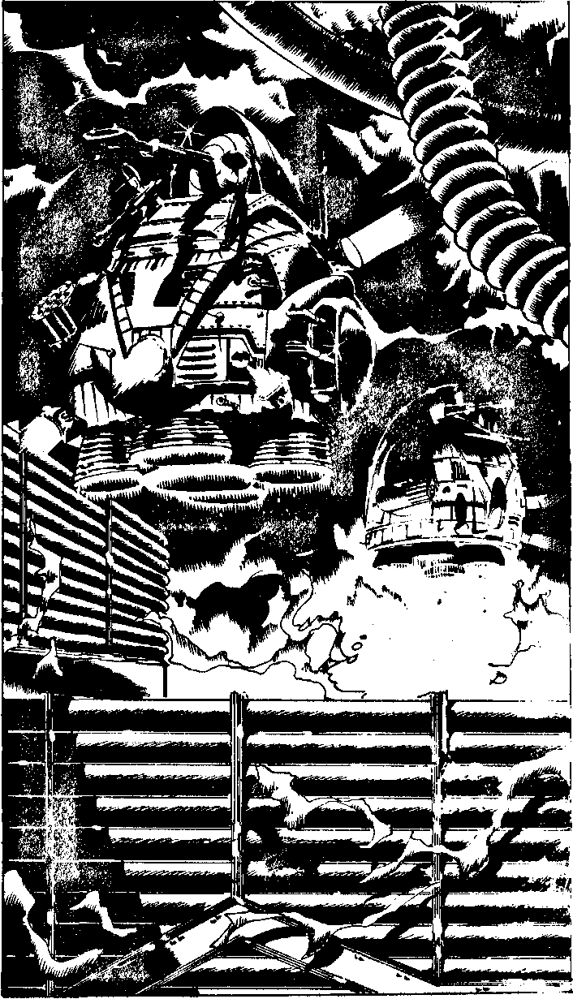

238
You pick your way through the boulders, keeping low, and make your way slowly towards the loading bay at the back of the mining droid. As you go you pass the burnt out remains of a worker droid; its function may once have been to take rock samplesbut the corrosive gas has completely destroyed it. You watchthe two guardian wardroids scanning the area methodically. The rods of ore piled in the loading bay are Polybdenum ore. If the wardroids collect enough Yelov will be able to send them through time to attack the Space Federation. Will you:
| Throw a grenade at one of the wardroids? | Turn to 263 |
| Use a grenade to destroy the Polybdenum? | Turn to 323 |